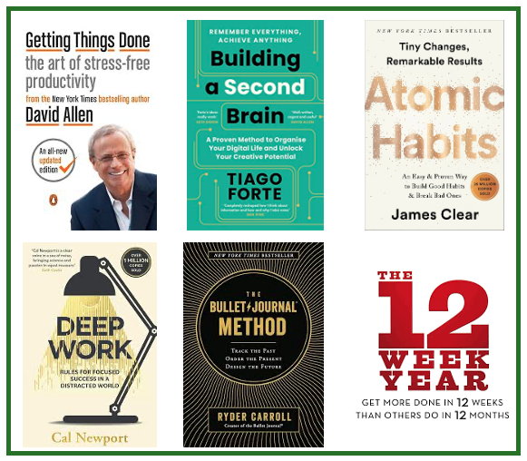
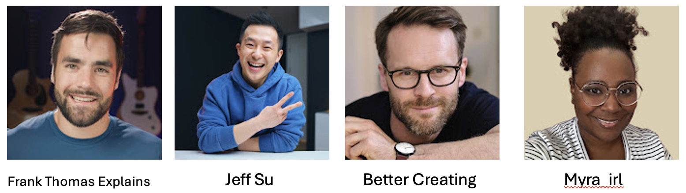

Introduction to Notion
Notion has been a management and organization tool that I have been using on and off for the last 6 years, and finally this year I have hit my stride with the platform. This week’s wrap-up is about how I use Notion to manage my day to day responsibilities and how to avoid some of the mistakes I’ve made along the way.
Most important to remember about the platform is that it is a tool that is typically aligned with productivity and project management, but the thousands of users and the seemingly unlimited customization abilities of Notion can make it whatever you want from a whole life management tool to a simple task manager.

Since most folks use it as a life or project management tool, the setups align with a few titans in the productivity space. I’ve listed a few of them and their books below.
Getting Things Done (GTD) — David Allen
Building a Second Brain — Tiago Forte
Atomic Habits — James Clear
Deep Work — Cal Newport
The Bullet Journal Method — Ryder Carroll
The 12-Week Year — Brian Moran & Michael Lennington
You may notice that the productivity space that guides a lot of this is male- dominated… do not be fooled the Notion girlies (and our non-binary builders) are what turns a simple system from a rigid practice to a flexible tool with a little pizzazz to keep you coming back to using it! More impactful, I found several of the concepts in the books to be less intuitive than I would like and the Notion girlies came through with great ways to help me think about adapting the systems to how my life works.
Getting started on the platform is free and 99% of the platform’s functionality is available at the free tier. There are paid tiers and a free pro account if you are a student. I believe the limitation between a free versus paid account is in the storage space, but I haven’t encountered a problem. In addition, there are tons of free templates to get you rolling if you want some inspiration before building your own pages.
There are a few things to consider before you go down the rabbit hole, and those are having a clear vision of what you want to use Notion for, identifying what in your current system is and is not aligned, and finally, how can Notion support you in meeting your goals rather than create a distraction or friction point in your process. Let me explain what I mean.
First, you have to decide is what you want to use Notion to do - is it replacing other management software, consolidating a multi-tool workflow that isn’t working, or do you want it to integrate into a system you are already using? I use it as the single place I operate my day-to-day from; multiple responsibilities for me means multiple ways I can lose myself in task switching and that tanks my productivity. I was looking for a way to help me integrate the parts of my workflow that were working and help me set up a place where I could manage the pieces that weren’t. For example, I love to use my Notes app to keep running to-do lists, drop thoughts or ideas, or make quick reminders to myself. The problem is that there’s no tracking, connection to the larger project the idea or task relates to, and no way to see if I’ve already dropped this brain bit into its project or calendar or whatever and that is frustrating. It felt like I was doing triple work just to get everything aligned and that led to task overwhelm and progress stunting.
Second, think about your working style. Notion can be as standardized or bespoke as you’d like it to be - everyone has some new way to get it done, and if you aren’t sure what you’re trying to do and how you work, you will surely create something that creates more work than it is worth. For example, I keep a working log of notes in my Google Drive for each project and I thought maybe I would transition it to the Notion projects I built - it was more hassle than it was worth since it upended the habit I built by not matching the functionality or flexibility I need for that task. To combat making that mistake repeatedly, it helped me to sketch out what I needed to see and do everyday in one place. In Notion, that’s your dashboard(s) and databases. What do you need to see to get after it?
Third, if you’re like me and want to have a space to be focused on the work but also a space to see your short and long term plans, it helps to make sure your end goals are clear. Once you know what you need and how you work, what are you doing this for? I needed a streamlined way to map out my day, ensure I was focused on the important or priority items, and a place to close out my day with a review and setup for the next day. This is important for two reasons; first, because having a daily start and stop ritual allows me to quiet my brain, and second, setting up the next day means I don’t spend time debating over where to get started and I can just start. Both of these things are crucial for me to make the progress towards the goals I want to achieve.
Now that we’ve thought about what we want to get out of the Notion, their learning & resources content is extensive but YouTube is your best friend when setting up Notion. I’ve linked some of my favorite folks below - they are straight forward, scaffold from the easiest entry points up to more complex builds.
I recommend watching some of the content from these creators to get started or learn more about some of Notion’s coolest features.
 Their pages: Frank Thomas Explains, Jeff Su, Better Creating, and Myra_irl
Do’s & Dont’s
DO start with the most basic setup you need to get started
DON’T sink a ton of time world- building before you’ve tested it out
DO spend time sketching out what you need
DON’T buy templates unless they are absolutely everything you’ve ever wanted
DO build a main dashboard and 1-2 pages to begin
DON’T create a new page for everything or you’ll never find it properly again
DO explore the automations and connections that can be made to your existing tools
DON’T try to make everything fit into Notion
DO set a trial period so you can assess what is working and what isn’t
DON’T only open Notion to create the tool or tweak the tool
Give Notion a test drive and tell me what you think! What do you like, dislike, or want to know more about?